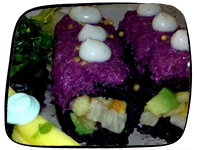
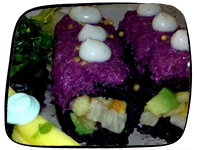

If you're vegan, vegetarian, or just in the mood for some hearty, organic, locally-sourced food, here are some places to try:
Organic vegan food straight from the farm to the table. Try the seitan piccata and the grilled kale salad with tempeh. Pick me!
If you're a vegetarian longing for the glory days when you used to eat meat, come here for great meat-substitute creations. There's a buffalo "chicken" sandwich, a "meatball" sub, and a "bacon" cheddar "chicken" ranch sandwich. Even meat-eaters love this place! Pick me!
 

This vegan sushi place will give you the most wholesome, delicious, fish-free sushi you've ever tasted. Rolls are wrapped with black Chinese forbidden rice, and topped with sauces like jalapeño-wasabi, toasted-cayenne, and mango-chili. Pick me!
Feel good about indulging here, with a wide variety of vegan and agave sweetened cakes and cupcakes. This place is especially friendly for people who are gluten-free, dairy-free, egg-free, and soy-free. Pick me!
You may never have thought of this before, but what better way to describe vetetables than "Dirt Candy?" Treat yourself to a fancy vegetarian meal here. The dishes are varied, from jalapeño hush puppies to chocolate beet cake. Pick me!


If abstaining from meat isn't your thing, you can still join the Treehuggers by eating at Bareburger, where only organic, free-range, grass-fed meats and all-natural cheeses abound. These yummy burgers are made from ingredients sourced from local artisans and sustainable farmers so you can feel good about biting into that burger. Pick me!